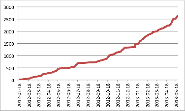

Running Bootcamps
It's been eighteen months since we started running two-day bootcamps. We've grown rapidly:
| Cumulative Number of Bootcamps | Cumulative Enrolment |
|---|---|
 |
 |
Now we need to start thinking about how to sustain that growth in the long term. To start, here are some stats on how things have been funded.
First, we've experimented with several different ways to fund travel costs, and several different ways of charging attendees:
| Funding Model | Charge Model |
|---|---|
|
|
Here's how often we've used each combination:
| Free | Deposit | Charge | Conference | ||
|---|---|---|---|---|---|
| Host | 52% | 1% | 2% | 0% | 55% |
| Grant | 18% | 1% | 0% | 1% | 20% |
| None | 17% | 1% | 0% | 0% | 18% |
| Mixed | 2% | 1% | 0% | 0% | 3% |
| Donation | 0% | 0% | 1% | 0% | 1% |
| Unknown | 3% | 0% | 0% | 0% | 3% |
| 92% | 4% | 3% | 1% | 100% |
One fact that doesn't show up in this table is that the number of grant-funded bootcamps has gone from 16 in 2012 to 2 in 2013. Even if we include two mixed-model bootcamps this year in the latter count, we're clearly much closer to bootcamps being self-sustaining.
But being closer isn't the same as being there. We're spending about $150K/year in grant money on salaries and overheads to keep this whole show going. At two bootcamps a week (which we think we can reach by this time next year), we'd need about $1500 per bootcamp to cover those costs. If we stick to an average of 40 learners per bootcamp, we'd have to charge a bit less than $40 per person. The problem is, we often can't do this: if we charge for training–even a refundable deposit–then some institutions will charge us for use of their space, and only charging those who don't have such a rule seems unfair. An alternative is to ask for sponsorship on top of instructors' costs, rather than tying it directly to enrolment.
Setting that issue aside for a moment, though, I'm more certain than ever that this training is cost-effective:
- The average attendee is a graduate student who costs about $50,000/year in salary and overheads (mostly overheads). If she works 40 hours a week, 48 weeks a year, that means her time is worth about $26/hr.
- Since January 2012, we've run about 75 bootcamps for about 2500 people. If each bootcamp is two eight-hour days, that works out to $1,040,000 worth of people's time.
- Instructors' travel costs have averaged about $2000 per bootcamp, but we'll round up to $2500 to account for local organizers' time, coffee, etc. That gives us another $187,500.
- The $150K/year burn rate quoted earlier for salaries and overheads gives us another $225,000, for a total of $1,452,500.
- But that's only $580 per learner, so at $26/hr, we only have to save people about 22 hours each for this to be worthwhile.
- Looking at it another way, if instead we save them an hour a week over five years, that's $6240 worth of their time, which is 11 times the up-front investment.
Measured that way, I'd say we're doing more than OK.